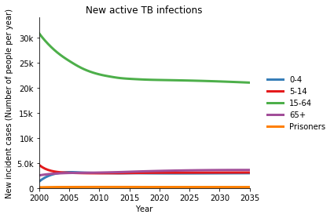
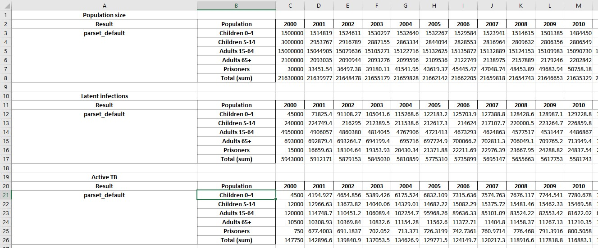
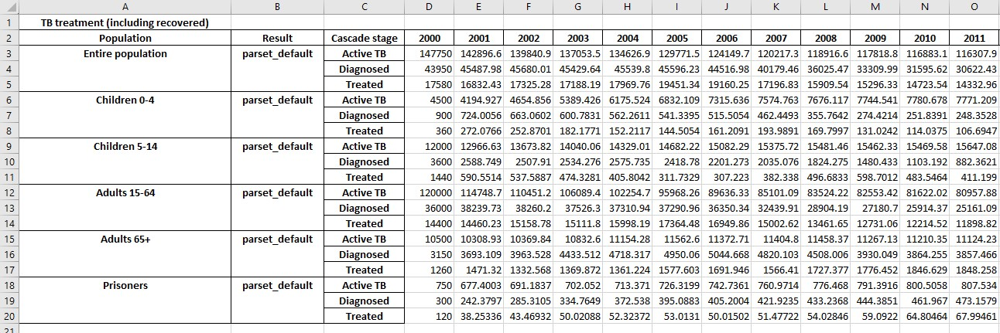
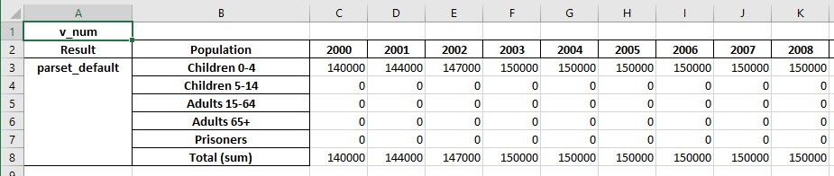
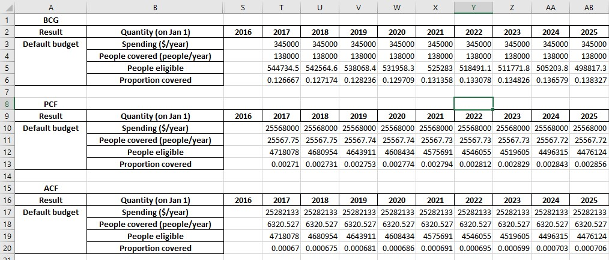
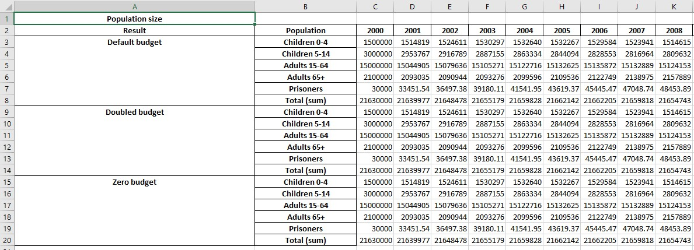
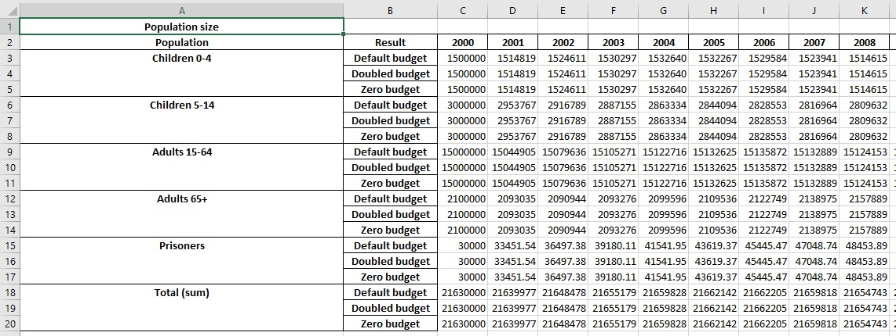
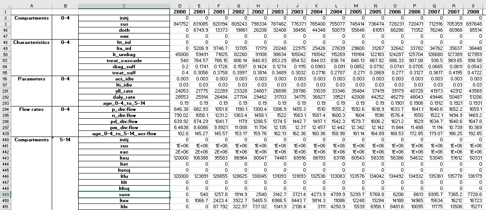
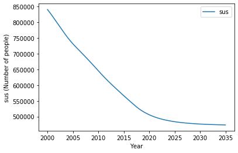

Results and Models¶
This page provides an overview of Result objects with a view to key interactions and access to model outputs.
[1]:
%load_ext autoreload
%autoreload 2
%matplotlib inline
import atomica as at
import numpy as np
import matplotlib.pyplot as plt
Atomica 1.15.0 (2019-08-01) -- (c) the Atomica development team
git branch: Git branch N/A (Git hash)
2019-10-15 06:03:13.317827
First we will run a simulation to produce a Result object.
[2]:
P = at.demo('tb')
result = P.results[0]
Creating a tb project...
Initialization characteristics are underdetermined - this may be intentional, but check the initial compartment sizes carefully
Elapsed time for running "default": 0.702s
The plotting documentation discusses how to generate plots in detail. This documentation will thus focus on methods and functionality of the Result object itself, with a view to
Generating pre-specified plots
Accessing and interacting with raw values
Pre-specified plots¶
It is possible to pre-define plots in the Framework by creating a sheet called ‘Plots’. This sheet contains a specification of a set of plots to generate:
[3]:
P.framework.sheets['plots'][0]
[3]:
| name | type | quantities | plot group | |
|---|---|---|---|---|
| 1 | Population size | series | alive | Demographics |
| 2 | Latent infections | series | lt_inf | TB progression |
| 3 | Active TB | series | ac_inf | TB progression |
| 4 | Active DS-TB | series | ds_inf | TB smear/strain |
| 5 | Active MDR-TB | series | mdr_inf | TB smear/strain |
| 6 | Active XDR-TB | series | xdr_inf | TB smear/strain |
| 7 | New active TB infections | series | {'New incident cases':['leu_act:flow','llu_act... | TB progression |
| 8 | Activated TB infections inc. relapse and immig... | series | {'Incident cases':['p_div:flow','n_div:flow']} | TB smear/strain |
| 9 | Smear negative active TB | series | sn_inf | TB smear/strain |
| 10 | Smear positive active TB | series | sp_inf | TB smear/strain |
| 11 | Latent diagnoses | series | {'Latent diagnoses':['le_ntreat:flow', 'lx_ntr... | Demographics |
| 12 | New active TB diagnoses | series | {'Active TB diagnoses':['pd_ndiag:flow','pm_nd... | TB progression |
| 13 | Latent treatment | series | ltt_inf | Demographics |
| 14 | Active treatment | series | num_treat | TB progression |
| 15 | TB-related deaths | series | :ddis | TB progression |
| 16 | Latent prevalence | series | lt_prev | TB progression |
| 17 | Active prevalence | series | ac_prev | TB progression |
| 18 | DR prevalence | series | dr_prev | TB progression |
| 19 | New active SP-DS diagnoses | series | pd_ndiag:flow | TB smear/strain |
| 20 | New active SP-MDR diagnoses | series | pm_ndiag:flow | TB smear/strain |
| 21 | New active SP-XDR diagnoses | series | px_ndiag:flow | TB smear/strain |
| 22 | New active SN-DS diagnoses | series | nd_ndiag:flow | TB smear/strain |
| 23 | New active SN-MDR diagnoses | series | nm_ndiag:flow | TB smear/strain |
| 24 | New active SN-XDR diagnoses | series | nx_ndiag:flow | TB smear/strain |
| 25 | DS number initiating treatment | series | {'Active DS-TB treatment initiation':['pd_ntre... | TB smear/strain |
| 26 | MDR number initiating treatment | series | {'Active MDR-TB treatment initiation':['pm_ntr... | TB smear/strain |
| 27 | XDR number initiating treatment | series | {'Active XDR-TB treatment initiation':['px_ntr... | TB smear/strain |
| 28 | WHO diagnosis rate | series | ac_diag_rate | TB treatment |
The most important columns here are the name which identifies the plot, and the quantities which corresponds to a valid input to the outputs argument of PlotData. To generate a plot, simply pass the name of the plot to Result.plot:
[4]:
result.plot('New active TB infections');

The output is the same as if a PlotData object was constructed, a series plot generated with axis='pops', and the title set to match the specified title:
[5]:
d = at.PlotData(result,outputs={'New incident cases':['leu_act:flow','llu_act:flow', 'lex_act:flow', 'llx_act:flow', ]})
at.plot_series(d,axis='pops');
plt.title('New active TB infections');

Calling Result.plot() with no arguments will result in all plots in the Framework being produced. At the moment, it is only possible to define series plots in the framework.
Exporting results¶
Many key outputs are generated by aggregation of raw model quantities - for example, in the demo TB model, the number of new cases is given by aggregating together several different modes of latent activation. Thus, often the main quantities for analysis are those defined as plottable quantities on the Framework’s ‘Plots’ sheet.
These outputs can be written to an Excel file using the at.export_results() function. This is not a method of the Result because it is possible to export multiple results at the same time, which is shown later in this document.
[6]:
at.export_results(result,'example1.xlsx');
This produces a spreadsheet like the one shown below:

Additional sheets will be present showing with numerical values for any cascades that are present:

If any parameters are targetable by programs, the exported results will also include the value of those parameters, which facilitates monitoring program overwrites.

If programs are present, an additional sheet will be written with program-related outputs. To demonstrate this, we will now first generate some scenario results:
[7]:
at.make_demo_scenarios(P)
scen_results = P.run_scenarios()
at.export_results(scen_results[0],'example2.xlsx');
Elapsed time for running "default": 0.862s
Elapsed time for running "default": 0.975s
Elapsed time for running "default": 0.848s
We have now exported results for a single simulation with programs active. The exported spreadsheet now contains a ‘Programs’ sheet with contents like:

We next turn to the question of exporting multiple results. The scenario set that we ran above produced 3 results. We can write all three to a workbook by passing all of them to at.export_results
[8]:
at.export_results(scen_results,'example3.xlsx');
This produces a workbook where all of the results are displayed together. For example, the original ‘Plot data’ sheet now shows:

with similar changes to the other sheets as well.
By default, the results are shown with each quantity (e.g. parameter, program) being in a separate table, that is grouped by result, then by population. So in the screenshot above, the table is for the ‘Population size’ quantity, on the left there are blocks for the ‘Default budget’ scenario, the ‘Doubled budget’ scenario etc. and then within each block, the population are shown.
Sometimes it is useful to group the quantities differently. For example, if we wanted to compare the number of people in each of the populations under each scenario. To do this, simply specify a different grouping order. The default grouping order described and shown above is ('output','result','pop'). If we wanted to place all of the same populations together, specify the order as ('output','pop','result') instead.
[9]:
at.export_results(scen_results,'example4.xlsx',output_ordering=('output','pop','result'));
This produces the following output

Notice how the values are grouped differently now. The ordering is specified independently for the plot data, cascades, and programs - see the documentation for the export_results function for full details.
Finally, note that it was only necessary to pass a list of results to at.export_results - this means that it is possible to combine arbitrary results into a single spreadsheet as required (they do not all have to come from the same set of scenarios or optimization).
Exporting raw results¶
The model contains a raw representation of the values at each timestep associated with parameters, compartments, characteristics, and flow rates (links). These raw values can be exported using the Result.export_raw() method of the result object. This method dumps the raw output for a single result. For example:
[10]:
result.export_raw('export5.xlsx');
This produces an Excel file with the following content:

Some rows have been hidden for clarity (see row numbers above). The raw output is quite detailed - for the TB example model, there are over 2000 rows of output.
In addition, Result.export_raw() returns a Pandas DataFrame with the contents that get written to the file - in fact, if you provide a filename when calling export_raw(), the only difference is that export_raw() automatically writes the returned dataframe to the specified file.
[11]:
df = result.export_raw();
df.head()
[11]:
| Compartments | ... | Flow rates | |||||||||||||||||||
|---|---|---|---|---|---|---|---|---|---|---|---|---|---|---|---|---|---|---|---|---|---|
| 0-4 | ... | Prisoners | |||||||||||||||||||
| initj | sus | vac | lteu | ltet | ltetoj | ltlu | ltlt | ltltoj | susx | ... | nd_rec:flow | nm_rec:flow | nx_rec:flow | pd_term:flow | pm_term:flow | px_term:flow | nd_term:flow | nm_term:flow | nx_term:flow | inc_Prisoners_to_15-64:flow | |
| Initialization population size | Susceptible | Vaccinated | Early latent untreated (diagnosable) | Early latent on treatment | Junction: Latent early treatment outcome | Late latent untreated (diagnosable) | Late latent on treatment | Junction: Latent late treatment outcome | Susceptible (diagnosis restricted) | ... | SN-DS natural recovery rate (flow) | SN-MDR natural recovery rate (flow) | SN-XDR natural recovery rate (flow) | SP-DS death rate (untreated) (flow) | SP-MDR death rate (untreated) (flow) | SP-XDR death rate (untreated) (flow) | SN-DS death rate (untreated) (flow) | SN-MDR death rate (untreated) (flow) | SN-XDR death rate (untreated) (flow) | - | |
| Time | |||||||||||||||||||||
| 2000.0 | 0.0 | 840678.852600 | 608386.857900 | 36000.000000 | 0.0 | 0.0 | 9000.000000 | 0.0 | 0.0 | 0.000000 | ... | 70.207200 | 0.352800 | 0.000000 | 22.680000 | 0.000000 | 0.000000 | 8.775900 | 0.044100 | 0.000000 | 3599.124203 |
| 2000.5 | 0.0 | 830137.145072 | 612643.944524 | 43212.161695 | 0.0 | 0.0 | 11053.800000 | 0.0 | 0.0 | 358.572375 | ... | 70.818614 | 0.639985 | 0.000533 | 23.825291 | 0.152407 | 0.000000 | 8.852327 | 0.079998 | 0.000067 | 3812.898363 |
| 2001.0 | 0.0 | 818925.421589 | 617419.057679 | 49049.025826 | 0.0 | 0.0 | 13494.924602 | 0.0 | 0.0 | 628.441660 | ... | 69.894645 | 0.765880 | 0.002470 | 24.327809 | 0.259297 | 0.000991 | 8.736831 | 0.095735 | 0.000309 | 4013.456882 |
| 2001.5 | 0.0 | 807432.574573 | 622771.499894 | 53461.573872 | 0.0 | 0.0 | 16171.595943 | 0.0 | 0.0 | 819.591902 | ... | 68.096580 | 0.887467 | 0.005613 | 24.302882 | 0.367924 | 0.002849 | 8.512072 | 0.110933 | 0.000702 | 4201.678556 |
| 2002.0 | 0.0 | 795937.831610 | 628390.817978 | 56730.982276 | 0.0 | 0.0 | 18943.408052 | 0.0 | 0.0 | 969.341361 | ... | 65.705562 | 1.004065 | 0.009913 | 23.893313 | 0.478019 | 0.005571 | 8.213195 | 0.125508 | 0.001239 | 4378.318797 |
5 rows × 2540 columns
Using the DataFrame can provide a convenient way to perform extra operations or to customize the spreadsheet.
Accessing raw values¶
Within the Result object, a Model object stores all of the underlying quantities. Within the Model, they are stored hierarchically within Population objects. For example:
[12]:
result.model.pops
[12]:
[Population "0-4",
Population "5-14",
Population "15-64",
Population "65+",
Population "Prisoners"]
[13]:
result.model.pops[0].comps[0:5]
[13]:
[JunctionCompartment "initj" ('0-4', 'initj'),
Compartment "sus" ('0-4', 'sus'),
Compartment "vac" ('0-4', 'vac'),
Compartment "lteu" ('0-4', 'lteu'),
Compartment "ltet" ('0-4', 'ltet')]
[14]:
result.model.pops[0].pars[0:5]
[14]:
[Parameter "aci_idiv" ('0-4', 'aci_idiv'),
Parameter "lti_idiv" ('0-4', 'lti_idiv'),
Parameter "ltei_idiv" ('0-4', 'ltei_idiv'),
Parameter "lteti_idiv" ('0-4', 'lteti_idiv'),
Parameter "acdi_idiv" ('0-4', 'acdi_idiv')]
Each of these objects has a vals attribute that stores the actual values. For convenience, they also have a t attribute that stores the time values
[15]:
result.model.pops[0].comps[1].t
[15]:
array([2000. , 2000.5, 2001. , 2001.5, 2002. , 2002.5, 2003. , 2003.5,
2004. , 2004.5, 2005. , 2005.5, 2006. , 2006.5, 2007. , 2007.5,
2008. , 2008.5, 2009. , 2009.5, 2010. , 2010.5, 2011. , 2011.5,
2012. , 2012.5, 2013. , 2013.5, 2014. , 2014.5, 2015. , 2015.5,
2016. , 2016.5, 2017. , 2017.5, 2018. , 2018.5, 2019. , 2019.5,
2020. , 2020.5, 2021. , 2021.5, 2022. , 2022.5, 2023. , 2023.5,
2024. , 2024.5, 2025. , 2025.5, 2026. , 2026.5, 2027. , 2027.5,
2028. , 2028.5, 2029. , 2029.5, 2030. , 2030.5, 2031. , 2031.5,
2032. , 2032.5, 2033. , 2033.5, 2034. , 2034.5, 2035. ])
[16]:
result.model.pops[0].comps[1].vals
[16]:
array([840678.8526 , 830137.14507161, 818925.42158913, 807432.57457253,
795937.83161008, 784441.31145007, 772966.40031675, 761484.72965712,
750738.10839043, 740726.7075929 , 731452.61243321, 722878.17143526,
714548.83375625, 706279.53274923, 697979.55879423, 689569.04393525,
680994.96153936, 672327.32261771, 663571.19208266, 654736.07168595,
645850.91467576, 636920.64915301, 628269.26291416, 619899.04042929,
611831.41164665, 604019.22687769, 596384.2807678 , 588828.99675137,
581304.94327658, 573857.20519325, 566508.96120233, 559286.15106257,
552121.80040635, 545022.48445789, 537976.90176265, 530976.25170021,
524749.57577068, 519196.79402084, 514247.67654804, 509837.99750088,
505909.33201513, 502408.77547005, 499288.76640834, 496506.75418243,
494024.79935619, 491809.15106843, 489829.83009034, 488060.24922052,
486476.84229001, 485058.7287178 , 483787.41693261, 482646.53707153,
481621.60073241, 480699.78696557, 479869.75180214, 479121.45900948,
478446.02988873, 477835.6100809 , 477283.25152837, 476782.80791693,
476328.8420937 , 475916.54411394, 475541.65871445, 475200.42114273,
474889.50038906, 474605.94897523, 474347.15854844, 474110.82061362,
473894.8918133 , 473697.56323097, 473517.23325391])
These objects have a .plot method that can be used to generate a diagnostic plot - this is mainly useful for debugging
[17]:
result.model.pops[0].comps[1].plot()

You can retrieve a specific population and object by name rather than by index
[18]:
result.model.get_pop('0-4').get_comp('sus')
[18]:
Compartment "sus" ('0-4', 'sus')
Methods get_comp, get_par, get_charac and get_links exist to retrieve variables of a specific type. If you have a code name but don’t know the type of variable, you can use the generic get_variable method. This method returns a list of matching objects (because if the code name corresponds to a link, there could be more than one matching object)
[19]:
result.model.get_pop('0-4').get_variable('sus')
[19]:
[Compartment "sus" ('0-4', 'sus')]
The get_variable method also supports the standard link syntax source:destination:par_name e.g.
[20]:
result.model.get_pop('0-4').get_variable(':ddis')
[20]:
[Link pd_sad_div:flow (parameter pd_sad_div) - spdtoj to ddis,
Link nd_sad_div:flow (parameter nd_sad_div) - sndtoj to ddis,
Link pm_sad_div:flow (parameter pm_sad_div) - spmtoj to ddis,
Link nm_sad_div:flow (parameter nm_sad_div) - snmtoj to ddis,
Link px_sad_div:flow (parameter px_sad_div) - spxtoj to ddis,
Link nx_sad_div:flow (parameter nx_sad_div) - snxtoj to ddis,
Link pd_term:flow (parameter pd_term) - spdu to ddis,
Link pd_term:flow (parameter pd_term) - spdd to ddis,
Link pm_term:flow (parameter pm_term) - spmu to ddis,
Link pm_term:flow (parameter pm_term) - spmd to ddis,
Link px_term:flow (parameter px_term) - spxu to ddis,
Link px_term:flow (parameter px_term) - spxd to ddis,
Link nd_term:flow (parameter nd_term) - sndu to ddis,
Link nd_term:flow (parameter nd_term) - sndd to ddis,
Link nm_term:flow (parameter nm_term) - snmu to ddis,
Link nm_term:flow (parameter nm_term) - snmd to ddis,
Link nx_term:flow (parameter nx_term) - snxu to ddis,
Link nx_term:flow (parameter nx_term) - snxd to ddis]
For convenience, the Result object has a get_variable method that wraps accessing get_pop and get_variable for the underlying Model object. So for example, the most convenient way of looking up a particular quantity is with:
[21]:
result.get_variable('sus','0-4')
[21]:
[Compartment "sus" ('0-4', 'sus')]
The population name is optional in Result.get_variable - if you omit it, it will return a list of all matching variables in all populations. This can be useful if there are multiple population types, and you don’t know which populations contain a particular variable.
[22]:
result.get_variable('sus')
[22]:
[Compartment "sus" ('0-4', 'sus'),
Compartment "sus" ('5-14', 'sus'),
Compartment "sus" ('15-64', 'sus'),
Compartment "sus" ('65+', 'sus'),
Compartment "sus" ('Prisoners', 'sus')]
Traversing the graph¶
The integration objects (such as Compartment, Parameter etc.) are very powerful because they store information about the relationship between quantities in the computational graph, which is not present if simply working with the values. These relationships are discussed in detail in the documentation of the model internals, but the most useful quantities are
Compartment.inlinks- All links flowing into the compartmentCompartment.outlink- All links flowing out of a compartmentLink.source- The source compartment for the linkLink.dest- The destination compartment for the linkLink.parameter- The parameter supplying values for the transitionParameter.links- All of the links associated with the the parameterParameter.deps- A dict with all of the parameter’s dependencies required to evaluate its functionCharacteristic.includes- All of the included compartments in a characteristicCharacteristic.denominator- The denominator compartment or characteristic
For example
[23]:
comp = result.get_variable('sus','0-4')[0]
comp
[23]:
Compartment "sus" ('0-4', 'sus')
[24]:
comp.outlinks
[24]:
[Link doth_rate:flow (parameter doth_rate) - sus to doth,
Link e_rate:flow (parameter e_rate) - sus to emi,
Link v_num:flow (parameter v_num) - sus to vac,
Link l_inf:flow (parameter l_inf) - sus to lteu,
Link age_0-4_to_5-14:flow (parameter age_0-4_to_5-14) - sus to sus]
Crucially, all of these variables are references to other objects. Therefore, it’s possible to chain the lookups together. For example, if we wanted to access the parameter governing the flow from sus to vac out of the sus compartment, we could use
[25]:
link = comp.outlinks[0] # Get a link flowing out of the `sus` compartment
par = link.parameter # Get the parameter associated with that link
par
[25]:
Parameter "doth_rate" ('0-4', 'doth_rate')
This functionality can be extremely useful in exploratory analysis because it makes it easy to trace through different parts of the model.